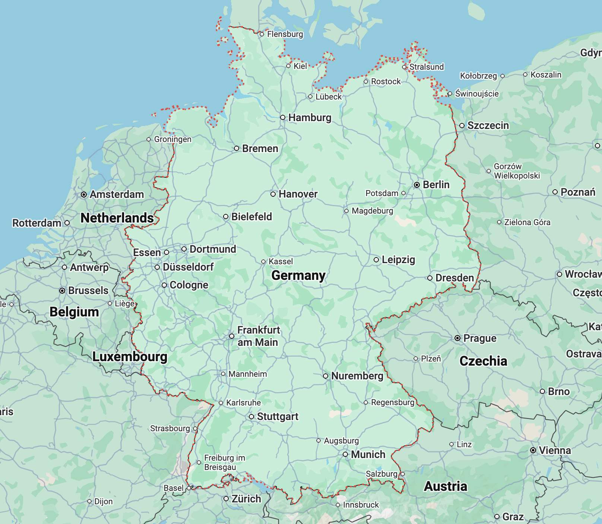
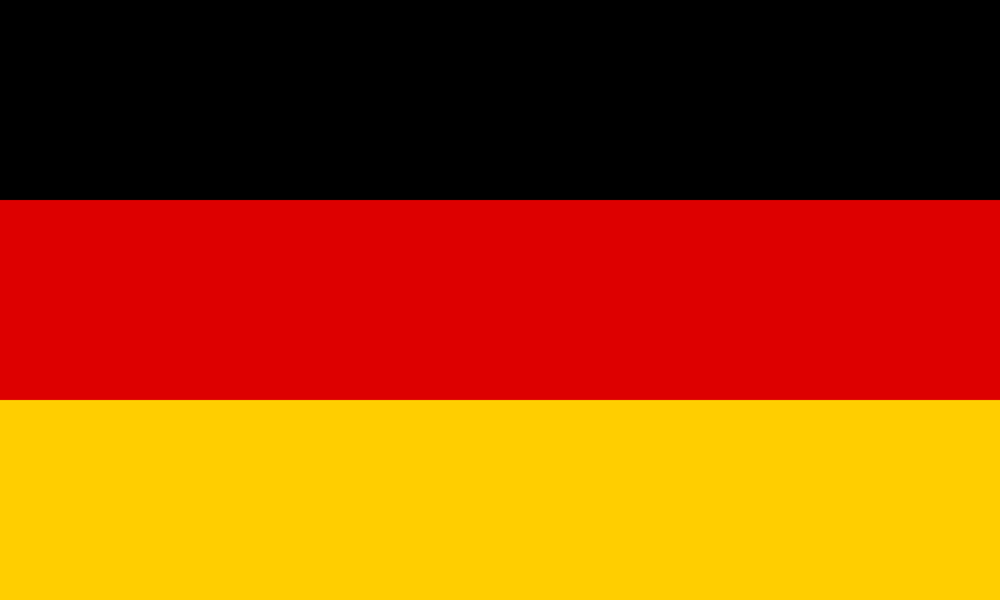
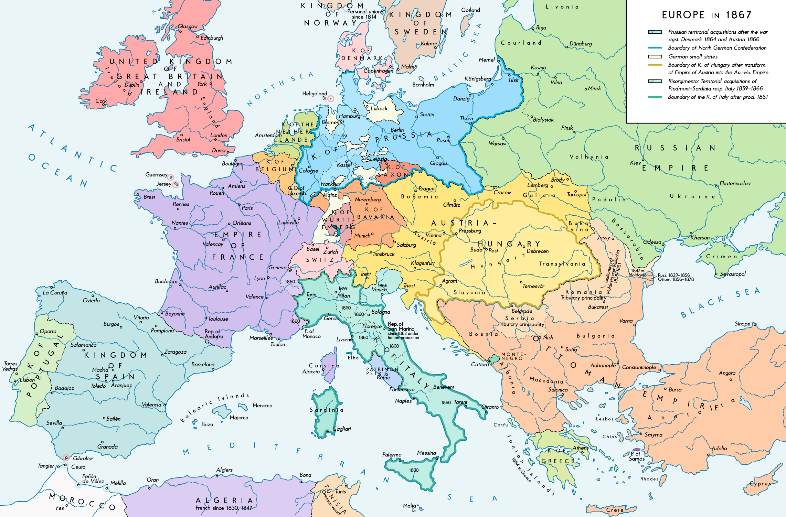
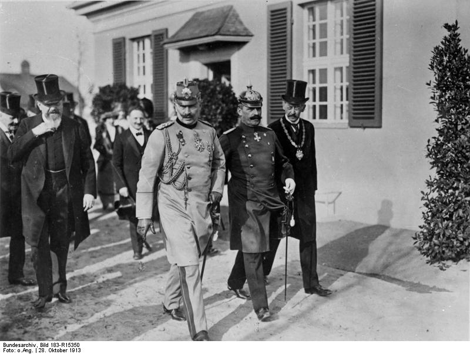
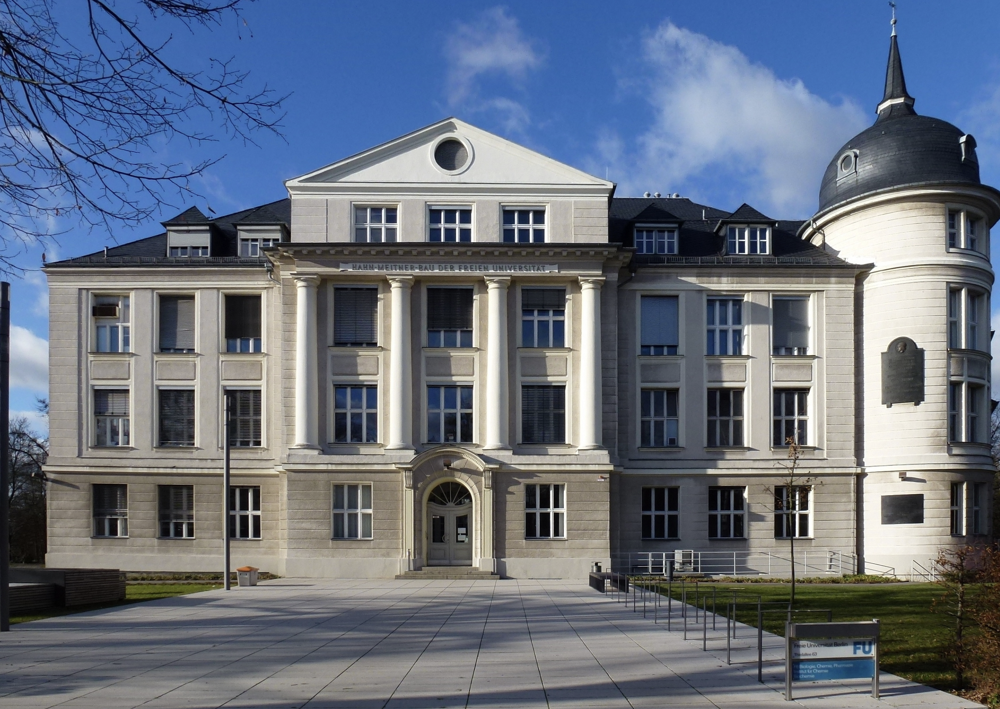

How Germany became an Industrial-Scientific Powerhouse?
Introduction
Growing up in Tirunelveli in South India, I remember learning relatively little about German industrialization and scientific achievements in school. We did not cover European enlightment, reformation, which I believe are important events in History. German Industrialization is not a topic that comes in high school curriculum or college curriculum much in South India.
Socially, The United States was much of a focus. It is assumed to be the Industrial-Scientific powerhouse. However, there have been large number of South Indian students who choose Germany for their higher-education, primarily due to quality of education, research and free tuition.

This was around 2000s, while the United States is still an industrial-scientific powerhouse. A Century ago, there was another competitor which truly was at the industrial-scientific forefront Germany. Germany overtook Britain in industrialization and scientific research, and by 1913, Germany was the largest economy in continental Europe and the third largest in the world.
Germany as an Industrial-Scientific Powerhouse
Around 1900, Germany had become a world leader in chemistry, pharmaceuticals, electrical engineering, precision optics, mechanical engineering, physics, and scientific research. [1], [2] Industrial names such as BASF, Bayer, Hoechst, Siemens, AEG, Zeiss, and Krupp operated at the boundary between scientific discovery and industrial production. [2], [3] BASF is a German chemical multi-national company, that is the world’s largest chemical producer to this day. [4]

Bayer is one of the largest German biotechnology, pharmaceutical in the world. [5] Zeiss started optics workshop in 1846 in Jena, Germany and today it’s a frontier German multinational medical technology company. [6] German scientists and engineers such as Albert Einstein, Heinrich Hertz, Robert Koch, Rudolf Diesel, Karl Benz, Gottlieb Daimler, Werner von Siemens, Carl Zeiss, and Max Planck reshaped physics, medicine, transportation, electrical engineering, and precision manufacturing. [1], [2]
German Scientists bagged large number of Nobel Prize. [7] Germany is described as having the highest number of Nobel laureates in the world from the prize’s establishment in 1901 until 1956. [7]
Germany’s universities themselves became an export. During the nineteenth century, more than 9,000 Americans traveled to German universities for advanced study. [8] They returned with ideas about research laboratories, seminars, doctoral education, and academic freedom that helped shape the emerging American research university. [8] The influence was substantial enough that institutions such as Johns Hopkins University, founded in 1876, consciously adopted elements of the German research-university model. [9], [10]
In this article, I’d briefly cover history of Germany, including Social history and Industrialization of Germany.
We’d focus on How German empire during its 47 years of existence, became an industrial, technological, and scientific power in Europe?
And how Germany arrived by 1913, Germany to be the largest economy in continental Europe and the third largest in the world? [1], [3], [11].
Early Tamil Nadu-Germany Connection and German Unification:
The first recorded encounter between German speaking Protestants and Tamil Nadu has been in 1706, when Christian Missionary Bartholomäus Ziegenbalg and Heinrich Plütschau arrived in Tranquebar, today’s Tharangambadi in Tamil Nadu. Zeigenbalg learned Tamil seriously, began transmitting that knowledge back to Europe.
He translated the New Testament into Tamil, which was printed at Tranquebar in 1715. He wrote about Tamil religious traditions and even reported to European readers on South Indian medicine and medical practice. Tamil Nadu has had German influence through India Evangelical Lutheran Churches, Arcot Lutheran Church, Tamil Evangelical Lutheran Church (TELC), who trace their roots to the work of Ziegenbalg and Plütschau.
At present, Germany is a united country, but it was not the case. In 1500s, the Reformation was a major political-religious movement in Europe. During the Reformation, Pre-cursor to German Empire was a collection of semi-independent territories under Austrian Habsburg dynasty. Reformation divided the terrorities into Catholic and Protestant Kings. There was Thirty year’s war from 1618 to 1648, which was a religious war between Catholic and Protestant Kings.
The war ended with Peace of Westphalia in 1648, which established the principle of state sovereignty. During this time, Prussia emerged as a major power in Europe. And around 1806, the Holy Roman Empire dissolved as Napoleon’s armies swept through Europe. After Napolean’s defeat, The German Confederation was established in 1815, which was a loose association of 39 German states, with Austria and Prussia as dominant powers. Prussia defeated Austria in the Austro-Prussian War of 1866, dissolved the German Confederation, creating North German Confederation under Prussian leadership.
After the Franco-Prussian War of 1870-71, the German Empire was proclaimed in 1871, with Prussian King Wilhelm I as Emperor. The unification of Germany under Prussian leadership marked the beginning of a new era of industrialization and scientific advancement in the country. Most German states united into the German Empire, which was a federal monarchy with a strong emphasis on industrial and scientific development.
German Lutheran missionaries Bartholomäus Ziegenbalg and Christian Friedrich Schwarz played important roles in the history of Protestant Christianity in Tamil Nadu. Ziegenbalg, a German Pietist associated with the Halle movement, arrived at the Danish settlement of Tranquebar (present-day Tharangambadi) in 1706 with Heinrich Plütschau.
Christian Friedrich Schwarz, a German Lutheran missionary trained in Halle. He was ordained in Copenhagen in 1749, arrived to India in 1750. He initially worked at Tranquebar. He later became closely associated with Tiruchirappalli (Trichy), where he worked from the 1760s, as well as with Thanjavur. Both missionaries reflected the educational and religious culture of the Halle Pietist movement. They combined Lutheran theological commitments with close engagement in language learning, translation, schooling, correspondence, and local religious and social life.
German influence has an imprint in Indian Engineering education. India has benefited from German technical expertise. Indian Institute of Technology Madras (IIT Madras) was formally established in 1959 under an Indo-German agreement, with substantial technical, academic, and financial assistance from the Federal Republic of Germany (West Germany). German support included professors and technical experts, training opportunities for Indian faculty in Germany, and scientific equipment for laboratories and workshops. This long-running collaboration played an important role in shaping IIT Madras’s early teaching, research, and engineering-training environment and contributed to its development as one of India’s leading engineering institutions.
Lastly, Max Mueller Bhavan Chennai, now Goethe-Institut Chennai, was founded in 1960. It provides German language education, cultural programming, library services, and exchanges involving local universities and institutions such as Anna University and IIT Madras.
Pre-German Unification
In the 1800s, Prussia tried to stay away from Napoleonic wars. However, it joined the coalition against Napoleon Bonaparte in 1806. The Prussian army was known for its strict discipline, rigid adherence to the traditions of Frederick the Great, and an inflexible command structure that soon proved outdated against Napoleonic warfare. The legendary Prussian army was utterly crushed by French forces at the twin Battles of Jena and Auerstedt. In 1807, King Frederick William III was forced to sign the Treaties of Tilsit. Prussia lost half of its territory, was occupied by French troops, and was forced to pay massive financial penalties to France.
Humiliated by the defeat, Prussian leaders realized their entire state society needed an urgent upgrade.
Christian Peter Wilhelm Beuth (1781–1853) was a Prussian statesman who helped promote early industrialization by using the state to spread technical knowledge, train engineers, and support manufacturers. He founded the Association for the Promotion of Industrial Enterprise and the Berlin Technical School in 1821, promoted the study and transfer of British machinery and manufacturing methods, and worked with Karl Friedrich Schinkel to publish technical models for craftsmen and manufacturers. Through these institutions, Beuth connected government, science, engineering, and industry and helped Prussia acquire and diffuse modern industrial technology.
Karl vom Stein was a Prussian Statesman (1757 – 1831). Karl August von Hardenberg was a Prussian Statesman (1750 – 1822) and Chief Minister of Prussia. Both of them were instrumental in implementing a series of reforms, based on Enlightenment principles, and practical ways which modernized Prussia’s administration, military, and society.
Their reforms included:
Abolished serfdom: the October Edict of 1807 ended serfdom in Prussia and gave peasants greater freedom to choose occupations and own land [12].
Government reform: Prussia replaced overlapping royal offices with a more centralized ministerial system, clarified responsibilities between departments, and increasingly based civil-service appointments on education, professional training, and administrative competence rather than noble birth alone [13], [14]
Local self-government: Towns received greater responsibility for managing their own affairs, electing local eligible citizens under the Municipal Ordinance of 1808 [15]
Military reform: Scharnhorst, Gneisenau, and other officers reorganized the army, improved officer training, and reduced some aristocratic restrictions [13]
Education reform: Wilhelm von Humboldt reorganized Prussian education and helped establish the University of Berlin in 1810. His reforms promoted the idea that universities should not simply teach existing knowledge, but should also produce new knowledge through research, while giving scholars greater freedom to pursue independent inquiry [16].
Economic reform: Prussia expanded freedom of trade and occupation, weakened guild monopolies, allowed people to enter trades without compulsory guild membership, and opened land ownership more broadly across social classes. These reforms helped create freer markets in labor, land, and commerce[12], [17].
Jewish emancipation: The 1812 Edict granted many Jews in Prussia Prussian citizenship, expanded their rights to own property and enter trades, and allowed greater freedom of residence and economic activity. However, access to some senior state and military positions remained restricted, so full legal equality had not yet been achieved [18].
In the early nineteenth century, most Germans still lived in rural areas, and agriculture was dominated by family farms in much of western and southern Germany and large Junker estates in eastern Prussia. The Prussian reforms beginning in 1807 weakened older feudal obligations and increased the freedom to own land and change occupations, although large landed estates remained powerful.
During the nineteenth century, German farmers gradually adopted improved crop rotations, potatoes, clover and other fodder crops, stall-feeding of livestock, better manure management, drainage, improved tools, and later mineral fertilizers. Agricultural production increased considerably, allowing a growing population to be supported even as increasing numbers of rural workers moved into mines, factories, construction, and expanding industrial cities. The Prussian reforms also helped create a more mobile labor force, which was important for industrialization.
Among the Agricultural landlords, The Junkers were the large aristocratic landowning elite of eastern Prussia, especially in the East-Elbian regions such as Brandenburg, Pomerania, East Prussia, and parts of Silesia. Their wealth came mainly from large commercial estates producing grain and other agricultural goods, and they also exercised disproportionate influence in the Prussian officer corps, bureaucracy, and conservative politics.

In 1818, there was no single unified Germany. There were numerous independent German states, each with its own government, economy, and policies. The German Confederation was a loose association of 39 German states, with Austria and Prussia as dominant powers. Among the German states, Prussia emerged as a major European power. After Napoleon’s defeat, the Congress of Vienna established the German Confederation in 1815 as a loose political association of 39 largely German-speaking states. The Confederation was dominated by Austria and Prussia, which were the two largest and most powerful German states. The Confederation was intended to provide a framework for cooperation among the German states, but it lacked a strong central authority and was often ineffective in resolving disputes.
Economic fragmentation was an issue with customs borders, different currencies, regulations, local privileges, and transportation costs divided the German states. Prussia’s customs reform of 1818 simplified its own customs system and began the process that ultimately produced the Zollverein in 1834. The Zollverein removed customs barriers among participating German states and progressively created a much larger internal market.
Richard H. Tilly and Michael Kopsidis argue in From Old Regime to Industrial State that German industrialization resulted from a combination of internal-market integration, improvements in land and water transportation, and the borrowing and adaptation of technologies from abroad [3]. During the early stages of industrialization, German producers drew substantially on foreign machinery, technical knowledge, and industrial practices, particularly those developed in Britain. Over the later nineteenth century, however, Germany built increasingly strong domestic technological and scientific capabilities and became a world leader in industries such as chemicals, electrical engineering, and machine-building [3].
Britain had demonstrated steam engines, mechanized textile production, modern ironmaking, machine building, and factory organization. German manufacturers and officials could visit Britain and Belgium, inspect machinery, recruit specialists, purchase equipment, reproduce foreign designs, and adapt technologies to local conditions. Germany therefore benefited from being a latecomer. Moreover, Prussia was reforming its education, Prussia had technical institutions such as the Gewerbeinstitut in Berlin; mining academies and polytechnics.
Prussia had also been developing institutions that increased its stock of educated and technically trained workers. Frederick II’s General School Regulations of 1763 strengthened compulsory elementary schooling, requiring boys and girls to attend school from approximately ages five to thirteen or fourteen and establishing standards for teachers, examinations, and school inspections. Schooling was not universally free, although provisions existed to support children whose families could not pay fees. During the nineteenth century, Prussia and other German states further developed Gymnasien, universities, mining academies, polytechnics, and technical institutions such as the Gewerbeinstitut in Berlin. These institutions gradually created a stronger connection between scientific knowledge, technical education, engineering, and industrial production.
The acceleration of industrialization in Germany came with introduction of railways from 1830s, especially after 1850. Railways created demand for industrial goods. Every new line required rails, locomotives, wagons, bridges, coal, iron, engineering, financing, and machine tools. Between 1850 and 1873 the German railway network quadrupled in length, and railway employment increased about tenfold between 1850 and 1870. Railways also became a major consumer of capital and helped stimulate the development of German financial institutions. The railway boom created a chain reaction of industrial growth.
Railways demanded coal, coal mines required machinery, railways demanded iron and later steel, iron and steel plants demanded coal, locomotive factories required skilled metalworkers and engineers, cheaper transportation allowed coal and ore to move farther, cheaper freight gave manufacturers access to larger markets. Cities with railway access subsequently grew faster. Using GIS data, historical railroad maps, and triennial population data for roughly 1,000 Prussian cities, Erik Hornung estimates the effect of railroad access on urban population growth. He finds positive short- and long-run effects of railway-station access on urban growth between 1840 and 1871 [19].
Industrial Entrepreneurs
Roughly from 1830s to 1870s, a distinct class of industrial entrepreneurs began emerging in German states. The German states were industrializing, the process was uneven and regionally differentiated.
Rail works
August Borsig built locomotives and machinery. He was a German businessman who founded the Borsig-Werke factory in 1837, a railroad and steam locomotive manufacturing company. His first major railway-related order was for 117,000 screws for the Berlin–Potsdam railway. He repaired imported locomotives, learned their weaknesses, and in 1841 built a locomotive partly based on an American Norris design but improved for German requirements. In 1843 he staged a race against an English locomotive, Borsig’s locomotive won. By 1854 the firm had built its 500th locomotive, and by 1858 its 1,000th, becoming one of Europe’s largest locomotive manufacturers[20].
Electrical engineering Siemens & Halske was founded in 1847 around electrical telegraphy, Siemens’s work on dynamo-electric technology helped turn electricity into a major industrial technology. This required, successful application of electrical engineering. It increasingly required formal knowledge of physics, precision measurement, mathematics, and highly trained engineers. German industry was starting to move from simply mechanized industry toward knowledge-intensive industry.
Association of German Engineers
Verein Deutscher Ingenieure was founded in 1856. Before industrialization, technical knowledge was often dispersed among craftsmen, mechanics, mine officials, military engineers, and individual firms. Professional engineering societies allowed technical specialists to exchange knowledge, publish findings, discuss standards, lobby for education reform, and establish engineering as a respectable profession. The VDI is the oldest and largest engineering association in Germany. It’s an organisation of about 135,000 engineers and natural scientists. Germany increasingly built a professional ladder connecting the workshop to scientific education. Practical mechanics remained essential, but technically trained engineers acquired mathematics, mechanics, physics, metallurgy, and eventually electrical engineering and chemical engineering. That meant Siemens or Krupp did not have to personally solve every engineering problem inside their companies. They could recruit increasingly specialized technical personnel.
Coal and Steel Manufacturing
The Krupp family, were German dynasty who had moved to Essen to join Merchant’s guild. Their descendants became industrialists and steel manufacturers, mainly involved with steel, artillery, ammunition and other armaments. Alfred Krupp expanded cast-steel production and increasingly supplied railway components and later armaments.
Coal mining expanded rapidly in the Ruhr as steam-powered pumping and improved mining technology made it possible to exploit deeper coal seams. Ruhr coal production rose from roughly 2 million metric tons in 1850 to about 4.3 million tons in 1860, while coal production across the German states expanded much more broadly. The rapidly growing coal industry became closely interconnected with railways, iron production, machinery, and later steelmaking. Large-scale migration into the Ruhr followed industrial expansion; Polish-speaking workers began arriving in significant numbers from the eastern Prussian provinces in the early 1870s, and this migration accelerated substantially during the final decades of the nineteenth century.
Machinery developed around Berlin, Saxony, and other industrial regions. Textile manufacturing remained important, particularly in Saxony and parts of the Rhineland. Germany was not industrializing uniformly. The Ruhr increasingly specialized in coal and heavy industry, Saxony in textiles and machinery, Berlin in machinery and later electricity, the Rhineland developed a diverse manufacturing and commercial economy. Industrialization was fundamentally regional before it became national.
Synthetic Dyes and Pharmaceuticals
Bayer was founded in 1863, initially around synthetic dyes. BASF was founded in 1865 as the Badische Anilin- und Sodafabrik. Hoechst had been founded in 1863. Organic chemistry had been developing rapidly in German universities, producing chemists trained to understand chemical structures, reactions, analysis, and synthesis. Synthetic dyes were among the first products where theoretical and laboratory chemistry could generate very large commercial returns. The remarkable fact is that the synthetic-dye industry had actually begun in Britain, after William Perkin’s 1856 discovery of mauveine.
Synthetic dyes became important to German industrialization because they demonstrated that scientific knowledge itself could generate commercially valuable manufactured products. By the early twentieth century, German chemical firms had become large research-intensive industrial enterprises exporting much of their production internationally. In 1913, approximately 82 percent of German synthetic-dye output was sold abroad
Precision Optics
A similar relationship between science and manufacturing developed in Jena around Carl Zeiss, physicist Ernst Abbe and glass chemist Otto Schott. Carl Zeiss had established his optical workshop in 1846, but microscope construction initially depended heavily upon craftsmanship and trial and error. Beginning in the 1860s, Abbe applied mathematics and optical physics to lens design. From 1872, Zeiss microscope lenses were increasingly manufactured according to scientific calculations rather than simply being improved empirically. Otto Schott subsequently developed optical glasses with controlled chemical and physical properties, allowing Abbe’s theoretical designs to be translated into still more advanced instruments.
This mattered to industrialization because precision instruments increased the ability of scientists, engineers and manufacturers to measure, observe and control physical processes. Better microscopes aided biological and medical research; optical instruments supported chemistry and physics; comparators and measuring devices improved precision manufacturing; and specialized glass created an additional technologically sophisticated industry. Zeiss itself expanded from a small workshop into an industrial research enterprise employing nearly 1,400 people by 1905, while incorporating scientists directly into product-development divisions.
Zeiss, Abbe and Schott connected physics, chemistry, engineering, skilled craftsmanship and factory production in a single technological system. Their success also showed that German firms could compete internationally in products whose value depended primarily upon knowledge, precision and engineering quality.
Finance and shipping
Universal banks such as Deutsche Bank, founded in 1870, Commerzbank in 1870 and Dresdner Bank in 1872 could combine ordinary banking activities with the financing of corporations, securities issuance and longer-term relationships with industrial firms. German universal banking itself had important roots in the financing requirements created by railway construction.
Under Albert Ballin, the Hamburg-Amerikanische Packetfahrt-Actien-Gesellschaft (HAPAG) expanded dramatically: between 1885 and 1914 its fleet grew from 23 to 194 vessels and its tonnage from approximately 55,000 to more than 1.3 million gross registered tons, becoming one of the world’s largest shipping companies. Shipping therefore complemented industrialization rather than causing it independently. German chemical producers, machinery manufacturers and other exporters increasingly required reliable transportation to overseas markets, while German industry imported raw materials and food from abroad.
German Unification and Industrialization (1866-1914)
Once Prussia won over Austria in 1866 and France in 1870-71, the German Empire was proclaimed in 1871. The unification of Germany under Prussian leadership marked the beginning of a new era of industrialization and scientific advancement in the country. Most German states united into the German Empire, which was a federal monarchy with a strong emphasis on industrial and scientific development. The new empire initially contained roughly 41 million people. The Mark became the imperial currency. The Reichsbank began operating in 1876. A unified imperial patent system appeared in 1877. The new empire inherited an industrial base already capable of rapid expansion.
France paid a huge war indemnity after losing the Franco-Prussian War, capital flowed through the economy, and company formation exploded. Before 1870, only about 235 joint-stock corporations had been founded in Germany. During the influx of new capital and around German unification, 928 new joint-stock companies appeared with a combined capital of approximately 2.78 billion marks. However, this expansion was not sustainable indefinitely. The speculative boom culminated in the financial crash of 1873, beginning the Gründerkrise. The crash did not reverse German industrialization.
Older industries such as coal, iron, steel, railways, and machinery expanded further, particularly in the Ruhr, Rhineland, Berlin, and Saxony. Large firms such as Krupp and later Thyssen increased the scale of steelmaking, mining, and machine production. Railways continued to integrate regional economies, move coal and raw materials more cheaply, and connect factories to Germany’s growing cities and ports.
Germany’s industrialization began to change in character. The country was no longer expanding only the industries of the first Industrial Revolution. A new group of industries based much more heavily on scientific knowledge began to grow: industrial chemistry, electrical engineering, pharmaceuticals, precision optics, and advanced machinery. This coincided with the Second Industrial Revolution, when chemistry, physics, metallurgy, and electrical science became increasingly important to technological development. During this time, German industrialization increasingly rested upon an expanding workforce of engineers, chemists, technicians, skilled workers, and technically trained managers. The German education system, particularly the universities and technical schools, produced a large number of highly trained scientists and engineers. This created a strong link between scientific research and industrial application, allowing Germany to innovate and improve its industrial processes rapidly.
The chemical industry became one of the clearest examples of this new relationship between science and industry. BASF, Bayer, and Hoechst, founded during the 1860s, grew rapidly after unification. Instead of merely manufacturing existing chemicals, these companies began hiring university-trained chemists and establishing their own research laboratories. Scientific research became a permanent activity inside industrial firms. New dyes, chemical processes, and pharmaceuticals could be developed in laboratories, patented, manufactured at large scale, and sold internationally. By 1913, German firms produced roughly 85 percent of the world’s synthetic dyes [21]. Germany had moved from borrowing foreign industrial technology toward systematically producing new technology itself. The German model of industrial research and development became a global standard, influencing industrial practices in other countries.
Electrical engineering developed in a similar way. Werner von Siemens had already established an important electrical engineering business before unification, but electricity became a major industry during the 1880s and 1890s. Siemens and AEG developed generators, electric motors, lighting systems, power equipment, electric railways, and other technologies required for electrification. Berlin became an important center of the electrical industry. Electricity also changed German factories themselves, allowing machinery to be powered more flexibly and helping create entirely new industries and urban infrastructure. By 1913, Germany had become a world leader in electrical engineering, with its firms producing a significant share of the world’s electrical equipment and technologies.
Precision manufacturing also became increasingly connected to scientific research. At Zeiss in Jena, physicist Ernst Abbe applied mathematics and optical theory to microscope design, while chemist Otto Schott developed new types of optical glass. Instead of improving instruments primarily through trial and error, Zeiss increasingly combined physics, chemistry, engineering, and precision craftsmanship. German firms were therefore becoming competitive in products whose value came not simply from raw materials or cheap labor, but from scientific knowledge and engineering skill. The scale of German industry also increased substantially. This industrial expansion transformed German society.
The population of the empire increased from roughly 41 million in 1871 to about 65 million by 1910, while millions of people moved from rural areas into industrial towns and cities. Berlin expanded rapidly, while the Ruhr became one of Europe’s largest concentrations of coal, steel, engineering, and industrial labor. Germany’s older strengths in coal, steel, railways, and machinery were now combined with newer strengths in chemistry, electricity, pharmaceuticals, scientific instruments, and precision engineering. German companies increasingly exported technologically sophisticated products rather than merely serving the domestic market. BASF, Bayer, Hoechst, Siemens, AEG, Zeiss, Krupp, and numerous machine-building firms competed internationally. Germany was gradually changing from a country that had once learned heavily from British industry into one whose technologies and industrial products were being adopted elsewhere [2], [3]. Scientific research itself also became more institutionalized. Universities continued to combine teaching with research, while companies increasingly maintained their own laboratories.
Kaiser Wilhelm Society

In 1911, the Kaiser Wilhelm Society for the Advancement of Science was established to create specialized institutes devoted primarily to advanced scientific research. The Society combined support from the state, private donors, and industrial interests and attempted to attract leading scientists by providing well-equipped laboratories and relatively few teaching obligations.
Its first institutes, opened in Berlin in 1912, focused on chemistry and on physical chemistry and electrochemistry, with Fritz Haber directing the latter. Institutes for experimental therapy and biology soon followed.

The Kaiser Wilhelm Society added another layer to Germany’s scientific system. Universities trained students and conducted research, technical universities educated engineers, industrial companies operated research laboratories, and the new Kaiser Wilhelm Institutes could concentrate on highly specialized fundamental research. The Society therefore represented the increasing institutionalization and specialization of German science and later became the predecessor of today’s Max Planck Society [22].
Germany before First World War
Fritz Haber demonstrated how atmospheric nitrogen could be converted into ammonia, but the laboratory reaction was extremely difficult to reproduce industrially. At BASF, Carl Bosch and a large team of chemists and engineers developed the high-pressure equipment, metallurgy, catalysts, and manufacturing system required to produce ammonia on a massive scale. In 1913, BASF began industrial production using the Haber-Bosch process.
In 1913, BASF began industrial production using the Haber-Bosch process. A scientific discovery made in a university environment had been transformed through engineering and corporate research into an entirely new industrial technology.
By the eve of the First World War, German industrialization therefore looked very different from that of the 1850s. Coal, steel, railways, and machinery remained essential, but Germany had added an increasingly powerful scientific layer to its industrial economy. Universities produced knowledge and trained scientists; technical institutions trained engineers; companies established research laboratories; banks helped finance large factories; and German firms converted scientific discoveries into products that could be manufactured and exported.
Germany had begun the nineteenth century largely learning from the technologies of Britain and other industrial leaders. By 1913, it had become one of the countries producing many of the technologies that defined the Second Industrial Revolution.
How Germany Pulled It Together?
Germany’s nineteenth-century industrial and scientific ascent emerged through a cumulative, mutually reinforcing process that unfolded unevenly across the German states and accelerated after the 1840s.
1. Reform institutions, especially in Prussia (1807–1811 and after).
Prussian reforms weakened the old estate order. The October Edict of 1807 began the abolition of peasant subjection, while reforms of 1810–11 reduced guild and monopoly restrictions and broadened freedom of occupation and enterprise. These changes helped create more mobile labor, more flexible property relations, and a more capable modern administration. Their effects, however, were gradual and uneven rather than immediate.
2. Integrate markets (1818–1834 onward).
Prussia’s tariff reform of 1818 removed internal customs barriers within Prussia and established a common external tariff. The Zollverein, formed in 1834, then reduced internal customs barriers across much of Germany. It did not instantly create a fully unified national economy, but it enlarged the effective market available to producers and strengthened commercial integration.
3. Borrow, adapt, and improve foreign technology (roughly 1820s–1860s).
As a later industrializer, Germany drew on British, Belgian, French, and other foreign technologies, machinery, industrial skills, and business practices. German firms and engineers increasingly adapted imported methods to local resources and markets, laying the basis for autonomous engineering and manufacturing capabilities.
4. Use railways to connect markets and mobilize heavy industry (1830s–1870s).
Railway construction was a major engine of German industrialization. It reduced transport costs, connected coal and iron regions to cities and ports, expanded markets, and created demand for coal, iron, steel, locomotives, machine tools, civil engineering, and finance. The feedback among railways, mining, metals, and machinery was central to the industrial takeoff of the 1840s and especially the 1850s.
5. Build technical and scientific capacity.
Universities, polytechnics, mining academies, technical schools, apprenticeships, and professional associations developed a growing supply of scientifically trained and technically skilled personnel. Germany’s university system was not merely cultural infrastructure: it increasingly contributed to invention and industrially relevant knowledge, including before the railway-centered growth surge.
6. Combine science with corporate organization (1870s–1900s).
In the late nineteenth century, leading firms most visibly in chemicals began to employ scientists and engineers systematically, cooperate with universities, and establish permanent in-house laboratories. The Imperial Patent Act of 1877 and the new Imperial Patent Office created more uniform protection for inventions across the German Empire, supporting commercialization and organized industrial research.
7. Move from technological catch-up to leadership in selected sectors (1890s–1913).
By the late nineteenth and early twentieth centuries, Germany was no longer simply importing technology. It became a global leader in chemicals and electrical engineering and highly competitive in steel, pharmaceuticals, optics, precision instruments, and advanced machinery. Its advantage rested on links among education, research, firms, finance, patents, professional networks, and state institutions.
By 1913, Germany possessed many features that scholars today would describe as a national innovation system.
In 1913: What Had Germany Actually Achieved?
By the eve of the First World War, Germany had undergone one of the most dramatic economic transformations of the nineteenth century.
Germany had become the largest economy in continental Europe and one of the world’s largest economies.
Angus Maddison estimates German GDP in 1913 at approximately 237.3 billion 1990 international dollars, compared with roughly 26.3 billion in 1820 under his historical territorial reconstruction [23]. Germany therefore ranked among the world’s three or four largest national economies on the eve of the First World War, depending on territorial and imperial definitions.
Germany had become one of the world’s leading industrial and technological economies.
The Strongest economic sectors were steel, chemicals, electrical engineering, machinery, transport equipment and technologically sophisticated manufactured goods. German exports increasingly specialized in chemicals, machinery and transport equipment, as well as differentiated products embodying relatively advanced technology [21], [24].
Germany had become the world’s second-largest exporter.
By 1913, the value of German exports had reached approximately 95% of British exports. By 1914 Germany had become the world’s second-largest exporter, behind only the United Kingdom [24].
Germany had developed a highly educated and increasingly urban industrial society.
Literacy was already close to universal by the late nineteenth century. Universities, Technische Hochschulen and research institutions formed one of the world’s most influential systems of scientific and technical education. German universities became especially influential in the natural sciences. They influenced the development of the modern research-university model [25].
The structure of the German economy had fundamentally changed.
In 1913, industry and crafts generated 41.1% of net domestic product. Agriculture, Forestry and Fishing accounted for only 23.3%. This includes mining, industry-related activities represented approximately 45% of NDP, including transportation raises the share to about 51.5% [26, pp. 454–455].
Germany’s population had expanded enormously.
The German Empire grew from approximately 41.1 million inhabitants in 1871 to about 67-68 million immediately before the First World War. At the same time, Germany changed from a predominantly rural country into a majority-urban society.
Germany had emerged as a major electrical power.
Economic historian Iván Berend reports that by the eve of the First World War German electricity production exceeded that of Britain, France, Italy and Sweden combined, reflecting Germany’s exceptional position in the electrical industries [21, p. 251].
Germany had surpassed Britain in steel production.
Germany overtook Britain in steel production during the 1890s. By 1913 Germany produced approximately 17.35 million tons of steel, compared with about 7.66 million tons in the United Kingdom, more than twice the British output [27].
Germany had overtaken Britain in its share of world manufacturing production.
Paul Bairoch’s historical estimates attribute 14.8% of world manufacturing production to Germany in 1913, compared with 13.6% for Britain. Only the United States, at approximately 32%, was clearly ahead [28, p. 296].
Germany had built one of the world’s largest transportation infrastructures.
By 1913 Germany possessed approximately 63,000 kilometres of railway. This was considerably more than Britain or France and second in Europe only to the enormous Russian network [21].
Germany dominated some of the most science-intensive industries of the Second Industrial Revolution.
In synthetic dyestuffs, German firms produced roughly 85% of world output by 1913. Companies such as BASF, Bayer and Hoechst linked university chemistry, industrial research laboratories, patents and large-scale manufacturing in ways that became a model for modern industrial R&D [21].